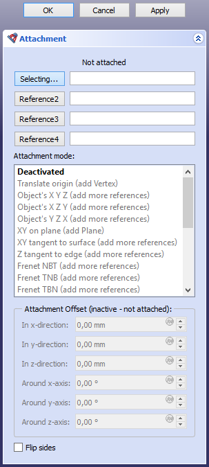

Part EditAttachment/zh-cn
|
|
| Menu location |
|---|
| Part → Attachment |
| Workbenches |
| Part, PartDesign |
| Default shortcut |
| None |
| Introduced in version |
| 0.17 |
| See also |
| Placement, Basic Attachment Tutorial |
描述
 零件吸附编辑命令可以将一个对象“吸附”到一个或多个其他对象上。被吸附的对象会与引用的对象建立链接，这意味着，如果引用对象的placement或几何形状发生了变化，被吸附对象的位置也会相应地自动更新。
零件吸附编辑命令可以将一个对象“吸附”到一个或多个其他对象上。被吸附的对象会与引用的对象建立链接，这意味着，如果引用对象的placement或几何形状发生了变化，被吸附对象的位置也会相应地自动更新。
吸附引擎
一个对象的吸附是由四种吸附引擎中的一种来控制的。默认使用哪种引擎，取决于该对象的具体类型。你可以通过对象的 数据Attacher Engine 属性（introduced in 1.0）,或者hidden 数据Attacher Type 属性来进行更改。
可用的引擎已在下方表格中列出。挂载引擎主要用于控制对象的 数据Placement。理论上，所有引擎都可以用于任何具备该属性的对象，但最后这三种引擎，只有在对象的形状与提到的“逻辑形状”相匹配时，其效果才是最符合逻辑和预期的。
| 吸附引擎 | 吸附类型 | 逻辑形状 |
|---|---|---|
| Engine 3D | Attacher::AttachEngine3D | |
| Engine Plane | Attacher::AttachEnginePlane | 与放置位置的 XY 平面重合的平面面。 |
| Engine Line | Attacher::AttachEngineLine | 与放置位置的 Z 轴共线的直边。 |
| Engine Point | Attacher::AttachEnginePoint | 与放置位置的原点重合的顶点。 |
本页面剩下的内容将重点介绍 3D 引擎。其他引擎的模式仅做简单罗列。需要注意的是，“平面引擎”的模式实际上与“3D 引擎”是完全相同的。
用法
- 选择要吸附的对象。
- 执行以下操作之一：
- 如果该对象已经具备 数据Map Mode 属性：请在 属性视图 中点击该字段，并按下随之出现的 … 按钮。
- 从菜单栏中选择 零件 →
 吸附 选项。
吸附 选项。
- 吸附 任务面板随即打开。
- 在任务面板的顶部，你可以看到显示着“未吸附”的字样。第一个标有 正在选择… 的按钮处于高亮状态，这是在提示你：现在需要在 3D 视图 中进行选择操作。
- 选择属于另一个对象的顶点、边或面/平面。
- 在按钮右侧的输入框中，会显示出被引用的对象及其子元素。例如，如果你选中了 零件立方体 的一个面，该框中可能会显示
Box:Face6。此时，按钮上的标签也会更新，显示出子元素的类型。 - 可用的模式会根据所选的参照物及其顺序进行筛选。例如，对于 Align O-Z-X 到 Align O-Y-X 这些模式，第一个参照物必须是顶点。如果第一个参照物是其他类型的子元素，这些模式就会从列表中移除。
- 吸附模式 <description> 现在显示在任务面板的顶部。
- 如果需要，可以从列表中选择一个不同的 吸附模式。想了解关于这些挂载模式的详情，只需将鼠标悬停在上面，就会弹出提示框。
- 根据所选的模式，你可以通过点击 参照2、参照3 和 参照4 按钮，并重复步骤 5，来添加最多三个额外的参照。当然，你也可以在选定挂载模式之前，先把所有的参照都指定好。
- 如果需要，可以设置一个 吸附偏移量。
- 单击 确定.
- 如果适用，你也可以在 属性视图 中更改 数据映射路径参数 属性。
吸附模式
3D引擎
{kind=link}

已停用
吸附已禁用。你可以通过编辑其 位置 属性来移动该对象。
平移原点
原点已与一个顶点对齐。不过，方向仍然由被吸附对象的“位置”属性来控制。
- 参照组合：
- 顶点。
对象的 X Y Z
其“位置”属性会变得与链接对象的“位置”属性完全一致。
- 参照组合：
- 任意
- 圆锥曲线
对象的 X Z Y
X、Y 和 Z 轴会分别与链接对象的局部 X、Z 和 -Y 轴进行对齐。
- 参照组合：
- 任意
- 圆锥曲线
对象的Y Z X
X、Y 和 Z 轴会分别与链接对象的局部 Y、Z 和 X 轴进行对齐。
- 参照组合：
- 任意
- 圆锥曲线
XY on plane
XY 平面将与一个平面面重合对齐。
- 参照组合
- 平面
XY 平面与曲面相切
XY 平面将在一个顶点处与面保持相切。
- 参照组合
- 面, 顶点
- 顶点, 面
Z 轴与边相切
Z 轴将与一条边保持相切对齐。一个可选的顶点用于定义对齐的具体位置。
如果没有链接任何顶点，则由 数据Map Path Parameter 属性来确定该点。
- 参照组合
- 边
- 边, 顶点
- 顶点, 边
Frenet NBT
{kind=link}
X 轴和 Y 轴分别与曲边上某一点处的 Frenet-Serret coordinate system 中的法向量 (N) 轴和副法向量 (B) 轴对齐。一个可选的顶点用于定义该位置。
如果没有链接任何顶点，则由 数据Map Path Parameter 属性来确定该点。如果先选择顶点，物体的原点将平移至该顶点处；如果先选择曲线，则原点保持在曲线上。
“Frenet NBT”与“Z 轴与边相切”类似，不同之处在于 X 轴有着明确的定义。
- 参照组合：
- 曲线
- 曲线, 顶点
- 顶点, 曲线
Frenet TNB
{kind=link}
X 轴和 Y 轴将与曲边上某一点处的 Frenet-Serret 坐标系中的切向 (T) 轴和法向 (N) 轴对齐。
查看 Frenet NBT.
Frenet TBN
{kind=link}
X 轴和 Y 轴将与曲边上某一点处的 Frenet-Serret 坐标系中的切向 (T) 轴和副法向 (B) 轴对齐。一个可选的顶点用于定义该位置。
参见 Frenet NBT.
同心
XY 平面与边缘上某一点的 密切圆 对齐。一个可选的顶点用于定义具体位置。
如果没有链接顶点，则由 数据Map Path Parameter 属性来确定该点。
- 参照组合：
- 曲线
- 圆
- 曲线, 顶点
- 圆, 顶点
- 顶点, 曲线
- 顶点, 圆
旋转截面
Y 轴与边缘上某一点的密切圆轴线对齐。一个可选的顶点用于定义具体位置。
参见 Concentric.
三点定义 XY 平面
XY 平面被对齐以穿过三个顶点。X 轴将穿过前两个顶点。
- 参照组合
- 顶点, 顶点, 顶点
- 直线, 顶点
- 顶点, 直线
- 直线, 直线
三点定义XZ 平面
XY 平面被对齐以穿过三个顶点。X 轴将穿过前两个顶点。
折叠
{kind=link}
这是用于折叠多面体的一种特殊模式。请按顺序选择四条共点的线：轮廓线 (1)、折痕线 (2)、另一条折痕线 (3)、另一条轮廓线 (4)。为了确定坐标系，系统会通过将线 1 绕线 2 旋转、线 4 绕线 3 旋转，从而使选定的轮廓线重合。原点将与公共点重合，X 轴与线 2 重合，Y 轴则对齐至轮廓线重合的方向。
- 参照组合
- 直线, 直线, 直线, 直线
惯性坐标系
X、Y 和 Z 轴与惯性坐标系的轴相匹配，该坐标系是基于惯性主轴和质心构建的。
- 参照组合
- Any
- Any, Any
- Any, Any, Any
- Any, Any, Any, Any
对齐 O-Z-X 平面
原点与第一个顶点重合。Z 轴和 X 轴将朝向某个顶点或沿着某条线对齐。
有关更多详细信息，请参阅 Align O-X-Y Type Attachment Modes。
- Reference combinations
- Vertex, Vertex, Vertex
- Vertex, Vertex, Line
- Vertex, Line, Vertex
- Vertex, Line, Line
- Vertex, Vertex
- Vertex, Line
对齐 O-Z-Y平面
原点与第一个顶点重合。Z 轴和 Y 轴将朝向某个顶点或沿着某条线对齐。
参阅 Align O-Z-X.
Align O-X-Y
The origin is matched with the first vertex. The X and Y axes are aligned towards a vertex or along a line.
See Align O-Z-X.
Align O-X-Z
The origin is matched with the first vertex. The X and Z axes are aligned towards a vertex or along a line.
See Align O-Z-X.
Align O-Y-Z
The origin is matched with the first vertex. The Y and Z axes are aligned towards a vertex or along a line.
See Align O-Z-X.
Align O-Y-X
The origin is matched with the first vertex. The Y and X axes are aligned towards a vertex or along a line.
See Align O-Z-X.
XY parallel to plane
The XY-plane is aligned to be plane-parallel to the XY-plane of the Placement of a linked object, and pass through a vertex. The origin is matched with the projection of the origin of the linked object onto the XY-plane.
Note that you have to select a whole object and not a subelement such as a face or plane.
- Reference combinations
- Any whole object (with a 数据Placement property), Vertex
Engine Plane
- Deactivated
- Translate origin
- Object's XY
- Object's XZ
- Object's YZ
- Plane face
- Tangent to surface
- Normal to edge
- Frenet NB
- Frenet TN
- Frenet TB
- Concentric
- Revolution Section
- Plane by 3 points
- Normal to 3 points
- Folding
- Inertia 2-3
- Align O-N-X
- Align O-N-Y
- Align O-X-Y
- Align O-X-N
- Align O-Y-N
- Align O-Y-X
- XY parallel to plane introduced in 1.0
Engine Line
- Deactivated
- Object's X
- Object's Y
- Object's Z
- Axis of curvature
- Directrix1
- Directrix2
- Asymptote1
- Asymptote2
- Tangent
- Normal to edge
- Binormal
- Through two points
- Intersection introduced in 1.0
- Proximity line
- 1st principal axis
- 2nd principal axis
- 3rd principal axis
- Normal to surface
Engine Point
- Deactivated
- Object's origin
- Focus1
- Focus2
- On edge
- Center of curvature
- Center of mass
- Vertex
- Proximity point 1
- Proximity point 2
Attachment offset
Attachment Offset becomes active when an attachment mode other than Deactivated has been selected. It is used to apply a linear or rotary offset within the attachment coordinate system (ACS), as defined by the attachment mode and the referenced object(s).
For the Translate origin mode only the X-, Y- and Z-direction offsets have an effect.
- In X-direction: sets an offset distance along the X-axis of the ACS.
- In Y-direction: sets an offset distance along the Y-axis of the ACS.
- In Z-direction: sets an offset distance along the Z-axis of the ACS.
- Around X-axis: rotates the attached object around the X-axis of the ACS.
- Around Y-axis: rotates the attached object around the Y-axis of the ACS.
- Around Z-axis: rotates the attached object around the Z-axis of the ACS.
- Flip sides: if checked, the attachment is reversed. This is equivalent to rotating the object 180° around the Y-axis of the ACS.
Limitations
- If selecting two lines results in an error: "Points are collinear. Can't make a plane", try selecting three vertices instead [1].
- Creation and modification: New Sketch, Extrude, Revolve, Mirror, Scale, Fillet, Chamfer, Face From Wires, Ruled Surface, Loft, Sweep, Section, Cross-Sections, 3D Offset, 2D Offset, Thickness, Project on Surface, Appearance per Face
- Boolean: Compound, Explode Compound, Compound Filter, Boolean Operation, Cut, Union, Intersection, Connect Shapes, Embed Shapes, Cutout Shape, Boolean Fragments, Slice Apart, Slice to Compound, Boolean XOR, Check Geometry, Defeaturing
- Other tools: Box Selection, Shape From Mesh, Points From Shape, Convert to Solid, Reverse Shapes, Simple Copy, Transformed Copy, Shape Element Copy, Refine Shape, Set Tolerance, Persistent Section Cut, Attachment
- Preferences: Preferences, Fine tuning
- Getting started
- Installation: Download, Windows, Linux, Mac, Additional components, Docker, AppImage, Ubuntu Snap
- Basics: About FreeCAD, Interface, Mouse navigation, Selection methods, Object name, Preferences, Workbenches, Document structure, Properties, Help FreeCAD, Donate
- Help: Tutorials, Video tutorials
- Workbenches: Std Base, Assembly, BIM, CAM, Draft, FEM, Inspection, Material, Mesh, OpenSCAD, Part, PartDesign, Points, Reverse Engineering, Robot, Sketcher, Spreadsheet, Surface, TechDraw, Test Framework
- Hubs: User hub, Power users hub, Developer hub